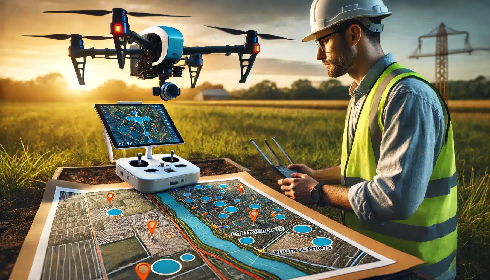
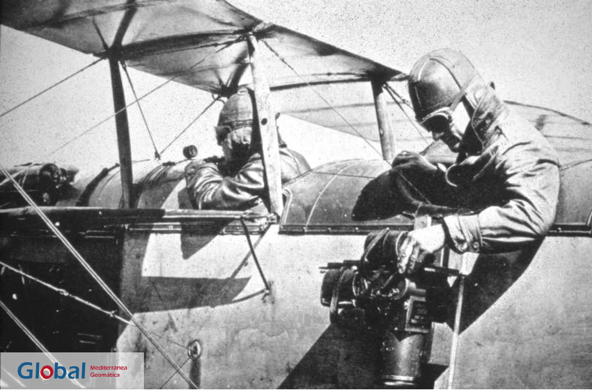

Introducción
La fotogrametría es una técnica que permite obtener información precisa de objetos y terrenos a partir de fotografías, utilizando principios de geometría. Mediante el análisis de imágenes tomadas desde diferentes ángulos (ya sea con cámaras terrestres, drones, aviones o satélites), se pueden generar modelos 3D, ortofotos y mapas topográficos. Es ampliamente usada en áreas como la topografía, ingeniería, medio ambiente, arqueología y planificación urbana, gracias a su capacidad para representar digitalmente el mundo real con alta precisión.
La fotogrametría nace en el siglo XIX con Aimé Laussedat, quien usó fotografías para medir terrenos. Su desarrollo continuó con la aparición de la aviación, dando origen a la fotogrametría aérea durante la Primera Guerra Mundial. En el siglo XX evolucionó con instrumentos analíticos y luego digitales, mejorando la precisión del procesamiento. Hoy, gracias a drones y software avanzado, es una herramienta accesible y esencial para generar modelos 3D y mapas detallados, utilizada tanto por profesionales como por usuarios comunes.
Tipos de Fotogrametría
La fotogrametría aérea es una técnica que consiste en la captura de imágenes del terreno desde plataformas elevadas, como aviones tripulados o drones (UAVs), equipados con cámaras fotográficas o sensores multiespectrales. Estas imágenes, tomadas con una geometría conocida y una alta superposición, permiten la reconstrucción tridimensional del terreno mediante el análisis estereoscópico y técnicas de correlación de píxeles.
La fotogrametría terrestre, también conocida como close-range, se realiza con cámaras situadas a nivel del suelo o cerca del objeto de estudio. Se utiliza en documentación arquitectónica, arqueológica, forense y modelado de estructuras complejas, donde se requiere gran detalle y precisión.
Mediante software como Agisoft Metashape, RealityCapture o Meshroom, se reconstruyen modelos 3D usando la técnica de Structure from Motion (SfM). Es una opción económica frente al escaneo láser, con resultados comparables en muchas aplicaciones técnicas.
También puede integrarse con sensores GNSS para georreferenciación precisa, siendo útil en ingeniería, minería o conservación de patrimonio.
La fotogrametría satelital utiliza imágenes obtenidas desde satélites con sensores ópticos, infrarrojos o de radar. Aunque tiene menor resolución que otras técnicas, ofrece una visión global y sistemática del planeta.
Satélites como WorldView, GeoEye, Pléiades o Sentinel capturan imágenes estereoscópicas útiles para modelos digitales de elevación, ortomosaicos y análisis multitemporales.
Su gran ventaja es permitir estudios en zonas remotas, siendo clave en seguimiento ambiental, planificación territorial y análisis de cambios geoespaciales.
Aplicaciones de la Fotogrametría
Una de las aplicaciones más destacadas de la fotogrametría es el modelado 3D...
La fotogrametría facilita el monitoreo y evaluación del impacto ambiental...
En la gestión de riesgos y prevención de desastres, la fotogrametría permite...